Blockchain-enabled product verification tool for a major networking hardware manufacturer. Eliminates counterfeit goods from entering US markets by tracking hardware through every stage of the supply chain.
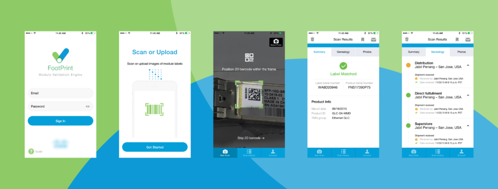
My team partnered with a large networking electronic hardware manufacturer to design a blockchain-enabled product verification tool with the goal of reducing fraud in their supply-chain. The resulting FootPrint app is helping eliminate counterfeit goods entering the US market, and providing additional authenticity assurance for consumers.
Before FootPrint, the loss prevention team was limited to cherry-picking the most obviously suspicious cases — a manual, gut-driven process that left most fraud undetected. FootPrint gave the team a data-driven way to work at scale: surfacing and prioritizing cases across the entire supply chain so investigators could process far more instances and catch fraud that would have otherwise gone unnoticed.
FootPrint tracks hardware through each stage in the supply chain — from the manufacturer to the end consumer — via two validation methods:
| Before FootPrint | With FootPrint |
|---|---|
| 1 Someone suspects goods may be counterfeit or stolen and contacts the loss prevention team. | 1 Someone suspects goods may be counterfeit or stolen and contacts the loss prevention team. |
| 2 Loss prevention team requests photos be emailed and/or devices shipped to company HQ. | 2 Loss prevention team requests photos be emailed and/or devices shipped to company HQ. |
| 3 At HQ, the rep manually enters serial numbers from photos into a legacy Salesforce system. | 3 Either in the field or at HQ, the rep directly scans devices or uploads images into FootPrint. |
| 4 If serial numbers don't return a match, rep begins an investigation to determine where the device entered the supply chain. | 4 FootPrint instantly provides a supply chain history and automatically determines if the device is fraudulent — showing exactly where it entered the chain. |
| 5 If origin is located, rep works with the legal team to determine if the company will take legal action. | 5 Rep passes records of fraud to the legal team to determine whether legal action is warranted. |
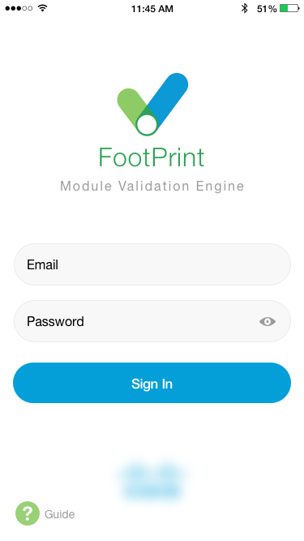
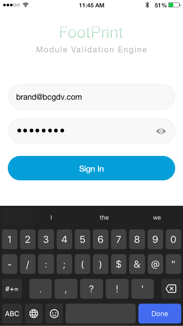
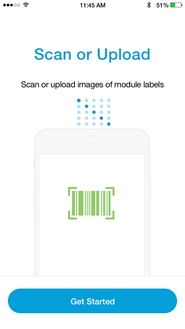
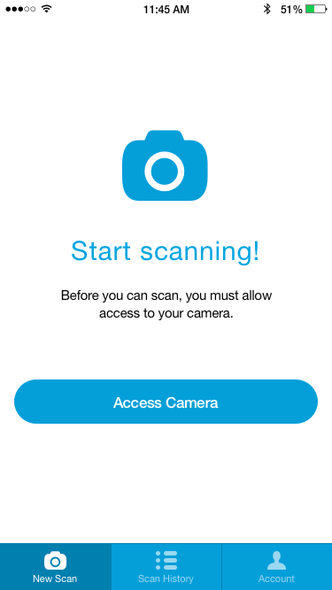
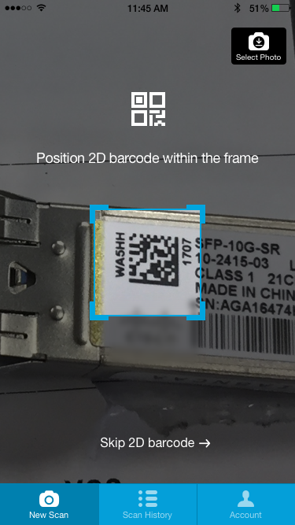
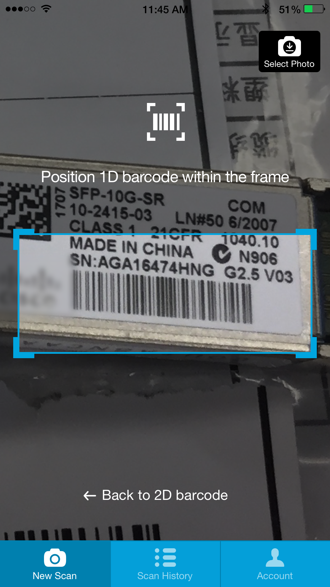
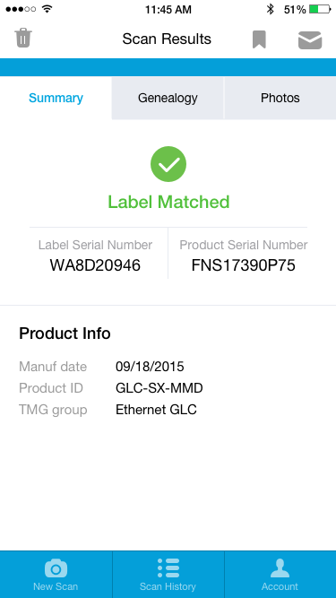
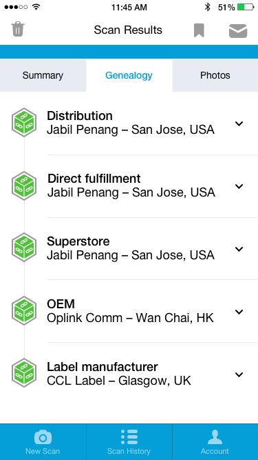
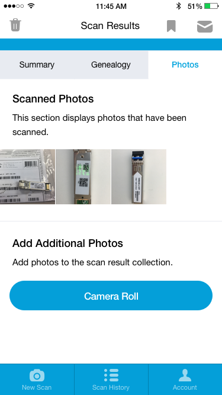
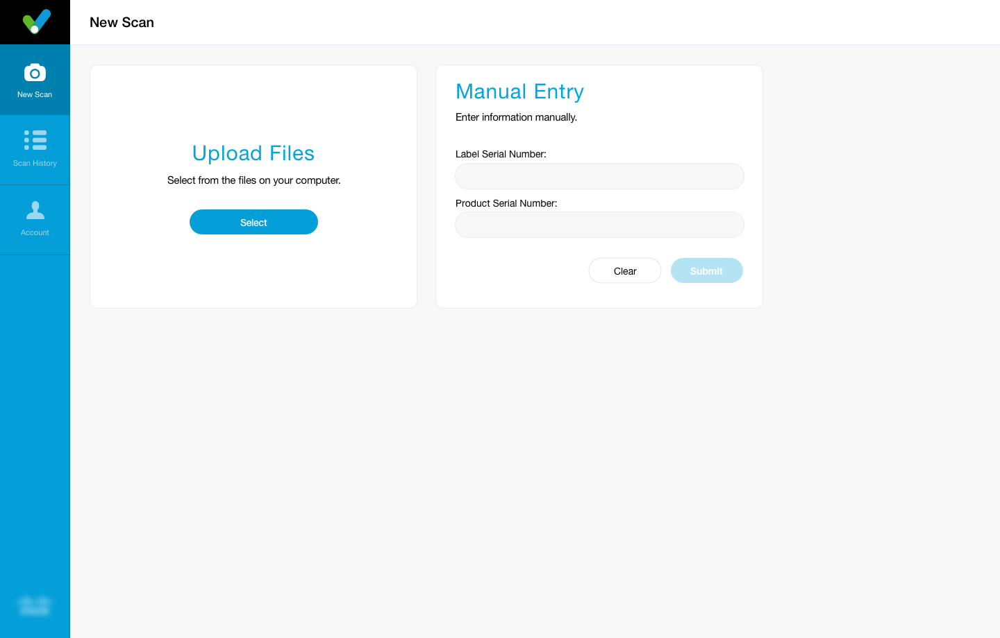
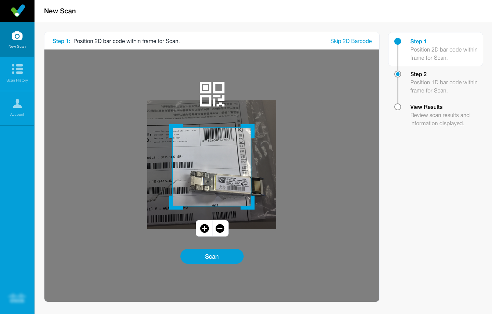
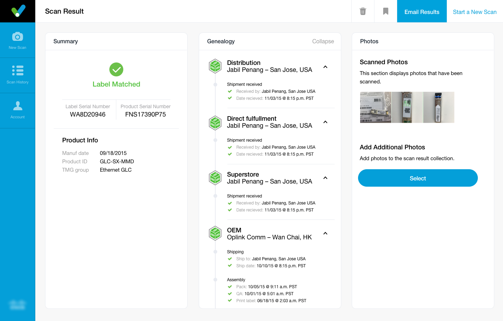